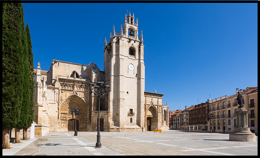
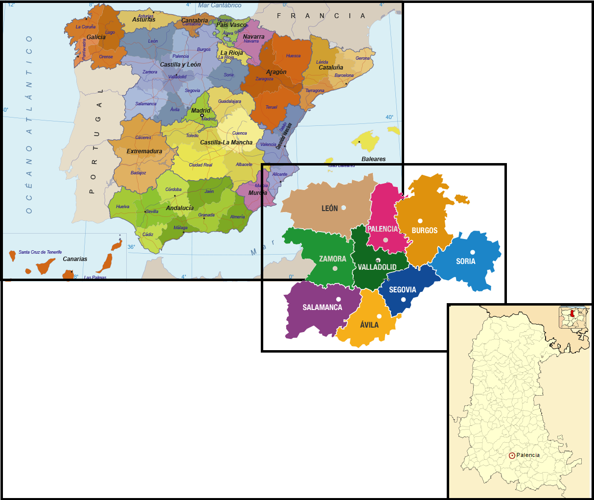
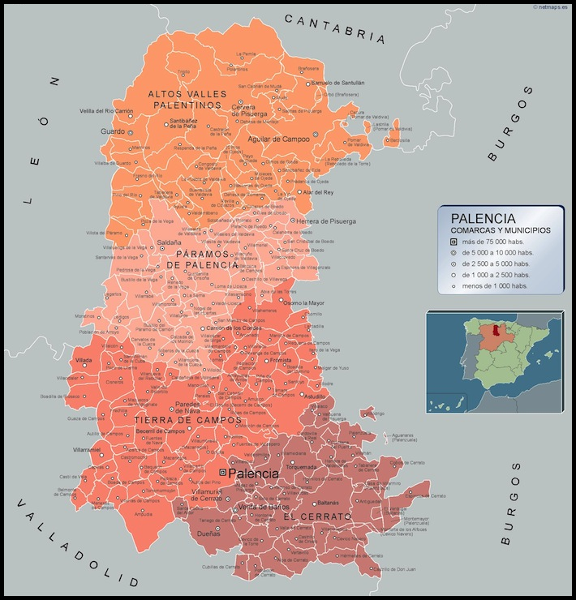

PROVINCIAS |
Localización Geografía Localidades Principales Historia Cultura Naturaleza Tradiciones Otros |
|---|---|
| Wikipedia Burgos Wikipedia León Wikipedia Salamanca Wikipedia Segovia Wikipedia Soria Wikipedia Valladolid Wikipedia Zamora |

Ir arriba Localización de Palencia La provincia de Palencia se encuentra en España, pertenece a la comunidad de Castilla y León. Ir arriba Geografía de PalenciaIr arriba Localidades Principales de PalenciaHistoria de PalenciaIr arriba Cultura de PalenciaIncluyo un enlace a la página del ayuntamiento de Palencia para poder ver la guia de Cultura y Ocio disponible. Guía de Cultura y Ocio de PalenciaIr arriba Naturaleza de PalenciaVídeo de Palencia Ir arriba Tradiciones de PalenciaIr arriba Otras cosas de PalenciaDejo en el enlace a varias pág. de interés sobre el turismo en Palencia, donde incluyen restaurantes, hoteles, rutas, etc. Guía Turismo de Palencia Turismo PalenciaIr arriba |